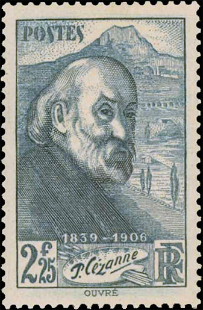
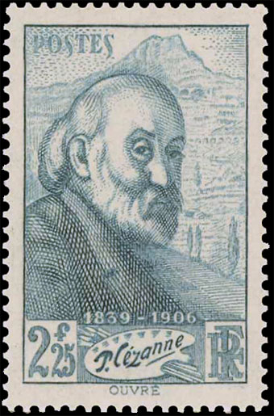
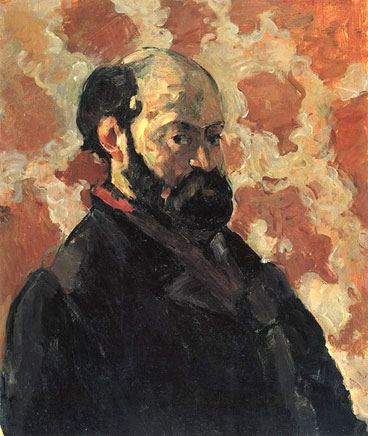
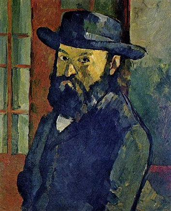
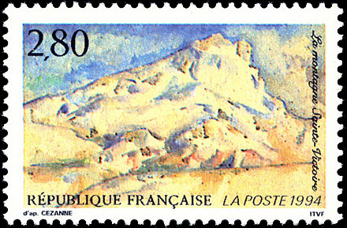

Some of us collect Art on Stamps as well for the beauty of these stamps as for that of the paintings shown on them. This art of collecting, known as thematic or topical, is the widespread one, but there are also other kinds of collecting of stamps, related to art or not. You will find a good example below, where we display two apparently identical stamps.
The stamp on the right was issued on the 15th of March 1939 by the French postal administration, Maury-Dallay no. 414, Yvert no. 421, Michel no. 439. It is dedicated to the 100th birth anniversary of the French post-impressionist painter Paul Cézanne.


The stamp on the left is a not issued version, the rare Maury-Dallay 414 - Type II. His catalogue price of about 7000 Euro reflects its rarity, the reason being that it is thought after by many stamp collectors. As the participant BP explained to us on the newsgroup news:fr.rec.philatelie, by using as source the Marianne catalogue (where the stamp is catalogued as Type I), this stamp served for testing a new kind of wiping of the printing rotating cylinders, a method that didn't give satisfaction and was therefore abandoned.


For comparison purposes we show two self-portraits of Cézanne, the first dated 1875 and the second 1880.
The stamps were engraved by Achille Ouvré (1872 - 1951), a French illustrator and engraver, known for the many books that he illustrated in the beginning of the 20th century. He created his first stamp in 1934, when he was aged 62. It was followed by other 54 stamps, and among them the above stamp dedicated to Cézanne.

In the background of the 1939 stamp appears the mountain Sainte-Victoire, that is present on many Cézanne's paintings, and that the artist could see from the vicinity of his house. See above a watercolor by Cezanne, that was reproduced on a 1994 French stamp, Maury no. 2854, Y&T no. 2891, Michel no. 3032.